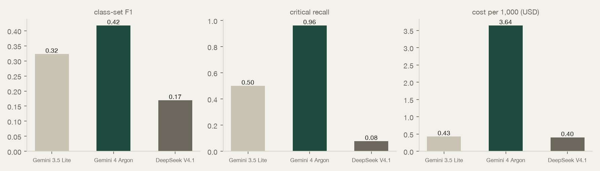
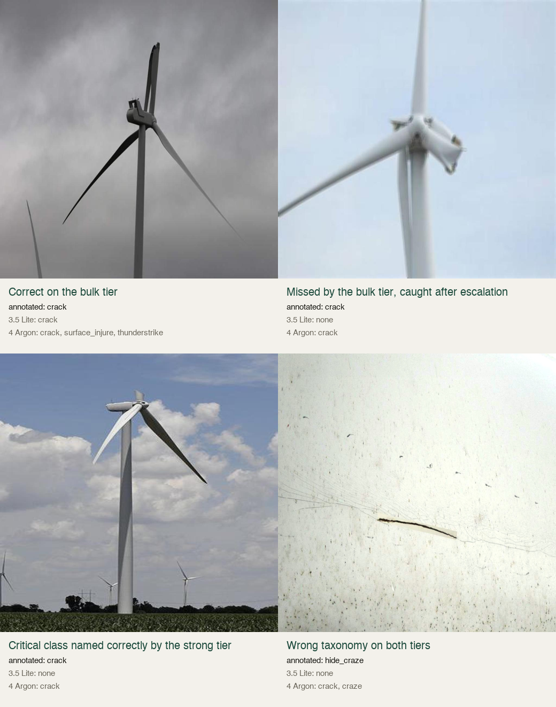
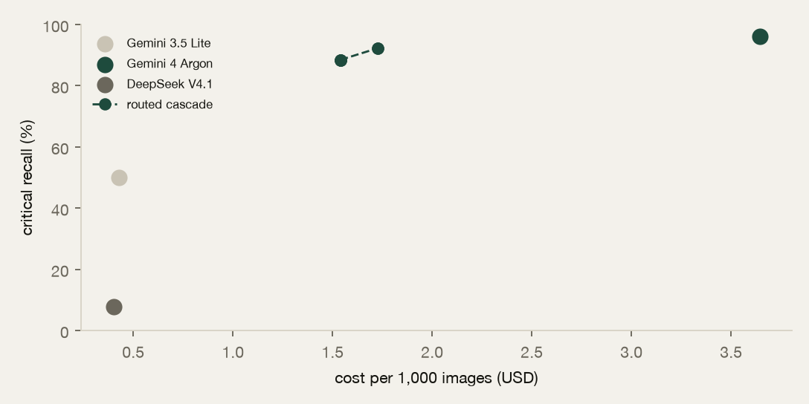
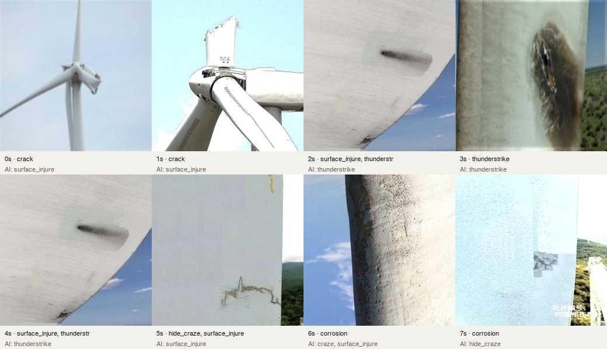

Industry study · Renewable energy O&M · November 2026
CG-BI
Confidence-gated cascade triage for multimodal wind turbine blade inspection. Drone photos in, a named defect, severity, location and technician note out, with a cheap tier on every image and a strong tier only where confidence is low. Measured on 75 real inspection images across three model tiers.
The business problem
Blade inspection is a documentation bottleneck. A drone captures hundreds of images per turbine and an engineer still writes a finding for each one: type, severity, location, action. The taxonomy is fixed across the fleet, so inconsistent wording and slow write-ups cost hours and break trend analysis.
The copilot drafts the finding in about two seconds. The engineer approves or corrects it. Because tiers differ by six-fold in cost, the routing decision matters as much as the model choice.
Results by tier
| model | images | exact set | class F1 | critical recall | cost / 1,000 | p50 | p95 |
|---|---|---|---|---|---|---|---|
| Gemini 3.5 Flash Lite | 75 | 17.3% | 0.323 | 50.0% | $0.43 | 1.33s | 20.5s |
| Gemini 4 Argon via gateway | 75 | 14.7% | 0.417 | 96.2% | $3.64 | 5.71s | 7.3s |
| DeepSeek V4.1 Flash | 75 | 9.3% | 0.169 | 7.7% | $0.40 | 6.59s | 46.5s |
| Routed cascade (Lite then Argon) | 75 | 25.3% | 0.424 | 92.3% | $1.73 | 4.01s | n/a |
Critical recall counts crack and thunderstrike together. Cost uses list prices, not subscription allowances. p95 includes gateway retries.


The tiering finding
- Bulk tier, Gemini 3.5 Flash Lite. 17.3% exact set match, F1 0.32, 50.0% critical recall at $0.43 per 1,000 images and 1.3 seconds. Good enough to draft, not to clear.
- Escalated tier, Gemini 4 Argon. Critical recall rises to 96.2% with F1 0.42 at $3.64 per 1,000 and 5.7 seconds. Worth it for critical classes, not for every image.
- DeepSeek V4.1 Flash is not viable here. 7.7% critical recall at roughly the bulk-tier price. Cheap image input does not buy visual grounding.
Examples

Each panel shows the annotated class set, the bulk tier's answer and the strong tier's answer. The second panel is the case the cascade exists for: the bulk tier returned nothing, and the escalated call found the crack.
Routed cascade
The useful policy is not a single tier. Run the cheap tier on every image, then escalate only the images whose own confidence is below 0.9 to the strong tier. One cheap call always, a strong call on roughly a third of images.
| confidence gate | escalated | exact set | class F1 | critical recall | cost / 1,000 |
|---|---|---|---|---|---|
| 0.50 | 30.7% | 24.0% | 0.406 | 88.5% | $1.54 |
| 0.60 | 30.7% | 24.0% | 0.406 | 88.5% | $1.54 |
| 0.70 | 30.7% | 24.0% | 0.406 | 88.5% | $1.54 |
| 0.80 | 30.7% | 24.0% | 0.406 | 88.5% | $1.54 |
| 0.90 | 36.0% | 25.3% | 0.424 | 92.3% | $1.73 |
| 0.95 | 36.0% | 25.3% | 0.424 | 92.3% | $1.73 |

At a 0.9 gate the cascade reaches 92.3% critical recall and F1 0.42 for $1.73 per 1,000, against $3.64 for the strong tier alone. That is the business case: most of the strong tier's recall at under half its cost.
Video sweep
Gemini accepts video directly, so the same workflow runs on a short drone sweep. An eight-second clip built from eight frames produced a per-second condition log: 3 of 5 critical frames flagged, exact class set on 12.5% of frames, 689 prompt tokens.
| second | annotated | copilot |
|---|---|---|
| 0 | crack | surface_injure |
| 1 | crack | surface_injure |
| 2 | surface_injure, thunderstrike | thunderstrike |
| 3 | thunderstrike | thunderstrike |
| 4 | surface_injure, thunderstrike | thunderstrike |
| 5 | hide_craze, surface_injure | surface_injure |
| 6 | corrosion | craze, surface_injure |
| 7 | corrosion | hide_craze |

Eight frames is a demonstration, not a benchmark. It shows the video path works and tracks defects across a sweep.
Business case
Model numbers are measured. Labor is an input you can change.
Model cost is the bulk tier on every image plus the strong tier on the escalated share. Review time assumes the engineer checks a draft rather than writing one.
What is strong, what is weak
Strong. Real drone imagery (CC BY 4.0), fixed taxonomy, three tiers measured on the same 75 images, a routed cost model, a confidence gate, a working video path, and a business case whose inputs are visible.
Weak. No healthy images in the source data, so no specificity or false-clear claim. 75 images and one seed. Craze versus hide_craze is ambiguous even for annotators. p95 includes retries. The copilot drafts; it does not approve.
Reproduce
uv run python scripts/run_eval.py --model both --per-class 13 uv run python scripts/build_video.py uv run python scripts/cascade.py uv run python scripts/examples.py uv run python scripts/report.py
Data: Wind Turbine Blade Defect dataset, DOI 10.6084/m9.figshare.30210175, CC BY 4.0.